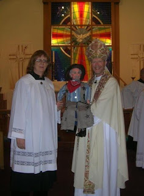

From Wilma Swartz : Yesterday , Bishop Kirk Smith, The Bishop of the…
3/7/2011
{kind=link}

From Wilma Swartz:
Yesterday, Bishop Kirk Smith, The Bishop of the State of Arizona, was participating in the 50th anniversary of St. Christoper's Church in Peoria AZ. After doing confirmations, he brought out Shorty and VENTertained the children as well as adults. He knew I was a vent immediately because I had made the coin (Mr. D's Collector Coin) into a necklace and I was wearing it over my vestment. (That's me beside the Bishop in the photo.)
Later, Bishop Kirk told me he had bought Shorty from you a ways back and had you repair Shorty recently. He asked me what I do for sticking mouths. I replied by first asking him where Shorty is kept? In his car and garage, was his reply*. I told him Shorty can't be in constantly changing temperatures because it can cause damage. Shorty told Bishop Kirk to take better care of him or he was going to take him out behind the chuck wagon and have a long talk with him!
* * * * *
*Note from Mr. D: I cringe to think of a vent figure being kept in any car or garage anywhere. But in Arizona? Human or dummy, that could be deadly!